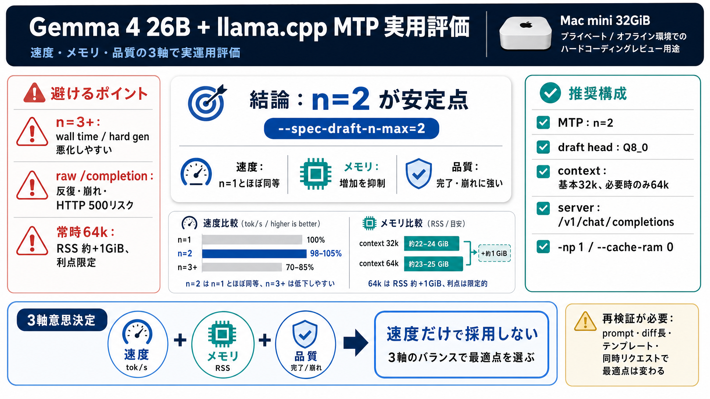

I Spent 3 Nights Testing Gemma 4 (MTP)
[Sign in](https://medium.com/m/signin?operation=login&redirect=https%3A%2F%2Fai.plainenglish.io%2Fgemma-4-mtp-local-infe…

llama.cpp の speculative decoding（MTP draft head）を、Mac mini（32 GiB）で「速度・メモリ・品質」の3軸から実運用寄りに評価しました。
draft を先に出して本体の生成を短縮するが、draft の強さ・context長・サーバAPI差で品質や安定性が変わります。
Mac mini 環境では、MTP の draft 最大回数は n=2（--spec-draft-n-max=2）が速度・メモリ・品質のバランスで最も実運用寄りでした。
llama-server では endpoint や設定次第で品質が揺れ、HTTP 500 や反復・フォーマット崩れが観測されました。
8k/16k/32k/64k はいずれも hard review は完了しますが、64k は RSS が約 +1 GiB 程度増えるのに決定的優位が限定的でした。
今回の private/offline code review では、常時 64k より必要時のみが妥当という判断に寄りました。
MTP draft head の精度差（Q8_0 / BF16 / F16）では、Mac mini 環境では Q8_0 が速度と総合安定性で合理的でした。
同じモデルでも、llama-cli と llama-server で挙動が変わりうるため、レビュー用途は再現性重視で設計すべきでした。
Unsloth Studio の比較では、期待した Gemma MTP assistant head が選ばれず ngram-mod になっていました。
便利でも内部選択が違い得るため、ログ等で mode 確認が必須です。
spec-draft-n を増やすだけで常に速くはならず、この環境では n=2 を上限寄りにする判断が妥当でした。
評価は特定の prompt/トークン予算/温度に強く依存します。別のコード種別、より長いdiff、別テンプレートでは最適点が変わる可能性があります。
Mac mini の private/offline hard code review なら、n=2・Q8_0・安全な endpoint を軸に「速度ではなく品質の再現性」を守るのが近道です。
本レポートの判断は「速度・メモリ・品質」を同格に扱う観点から作られています。
[Sign in](https://medium.com/m/signin?operation=login&redirect=https%3A%2F%2Fai.plainenglish.io%2Fgemma-4-mtp-local-infe…
We wanted a simple answer for Gemma 4 on a single H100: how much faster do [MTP](https://blog.google/innovation-and-ai/t…
Gemma 4 26B with MTP draft tokens reportedly runs around 40% faster, suggesting a significant speed boost for local AI w…
# Speculative decoding works great for Gemma 4 31B in llama.cpp : r/LocalLLaMA. [Skip to main content](https://www.reddi…
Llama.cpp just got Multi-Token Prediction. Gemma 4 26B went from 97 tok/s to 138 tok/s on a MacBook. Free 42%, zero qual…